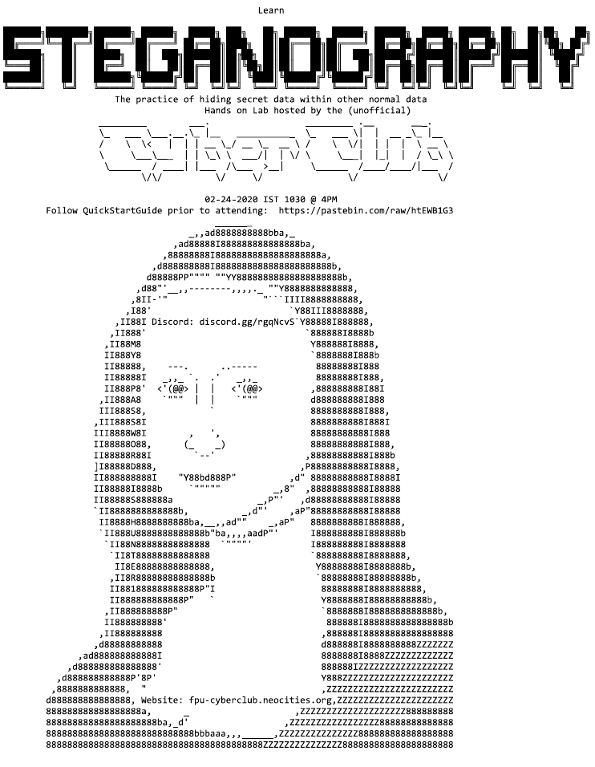

Home | Blog | Art | Music | About
Journey of Starting My Colleges Cybersecurity Club
When I got to my College there was no Cybersecurity club! Which was
a little surprising despite it being as new of a school as it was. There
was a Programming Club and plenty of other student orgs so it was
just a little strange. So if theres no club to participate in I guess I had
to start one. This will be a little entry documenting the things Ive learned
through that journey.It begins
The goals of the club was to provide a fun learning environment where
students can show up every week and learn new security concepts and
do so in a fun and hands on way. Since we had NO budget or equipment
available that ‘hands on’ method would have to be virtualized. We used
the learning platform TryHackMe to provide us plenty of free materials
and virtual labs, and it also introduced all members to a great platform
to continue their learning on their own time.A website was made using githubs static page feature. Which you can
find at fpu-cc.github.io. This documented future meetings and materials
needed to participate in the lab portion of meetings. (Kali Linux + THM
account). Instructions were made to make it easy as possible for noobs
to get started. Guiding people how to set up a kali linux virtual machine
so they could participate in meetings.I advertised each meeting with themed flyers. Placed wherever flyers
were allowed. The ASCII art flyers also helped to give us a distinct
theme and style. I also made sure that each flyer told readers to setup
their hacking environment before attending.
A little suprising to me was most members never even used linux
before at all. And many came without setting up their virtual machine.
As a solution, going forward I brought 4 USB thumbdrives that had all
of the necessary software and files, so unprepared members could just
copy them to their computer and get started in 5 minutes, instead of
having to download the .ova and virtualbox, which was taking a long
time on the open wifi.Just as things were taking off though…
COVID Obstacles
COVID completely halted the SP2020 semester. Clubs were no longer
able to meet in person and our classes moved to online. Attempts were
made to continue meetings online but no one showed up. So the club
stagnated for the rest of the Spring semester with plans to return in the
fall. So our story continues in FA2020.Advertising
Before the club can be officially acknowledged by the college we had to
have a steady attendance of 15 members across 4 different meetings.
As the school is small this was a little hard. The College also had rules
against leaving flyers around. Theres dedicated ‘flyer spots’ but from
experience I knew those were mostly ignored. So to get our name out
there, during the first week of FA2020 I printed 150 flyers and completely
flyer bombed the school. I also @everyoned across all the student
discords I could find. A couple days afterwards I got an email from
faculty to not place flyers, but it was definitely worth it. In that one
day the clubs membership more than doubled in size.Make it Online
After a few months of COVID19 living members were more ready to
attend online meetings, and in fact meeting online played to our
advantage as it made it much easier for members to attend. Within the
first month we were able to meet the attendance requirements and then
began the long and tedious process of paperwork. But we got official.